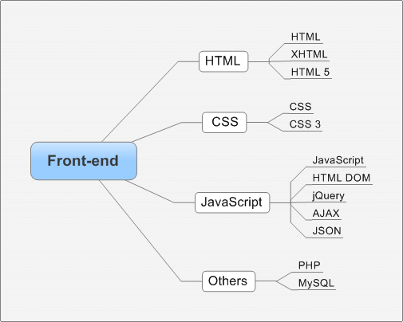

Profile
- 马致远 男 24岁
- 硕士 华中科技大学
- admin@7brant.me

MAN
这部分内容是我学习前端过程中的所感所悟，并按照脑图（Mindmap）、应用（App）和笔记（Note）三种形式组织而成的内容。每一篇的标题首字母代表了对应的类型。
- N005 text-decoration与border-bottom的使用
- N004 私人订制Error Pages
- N003 初探Page Visibility API
- M002 简约至上：交互式设计四策略
- A003 多看阅读
- M001 如何阅读一本书
- N002 关于Favicon图标
- A002 Sleep Cycle
- A001 EverMemo
- N001 图片中的alt属性和title属性
Skill
当我们没有意识到某件事的意义时，通常会为了回报而坚持；如果等不到回报，我们就会轻易放弃。学习过程亦是如此，仅仅为了"回报"这个目的，而忘了"贡献"这个过程时，事情就会很难坚持。王建硕说过：
对贡献有激情，对回报有信心
前端开发（the front-end development）是一个系统的学习过程，不仅包含了HTML、CSS和JavaScript三板斧，还涉及诸多细分知识点。下图是我的学习规划：

Lab


这里还安静的躺着一些实用工具或者测试模块。学习过程可以是枯燥的，也可以是有趣的。